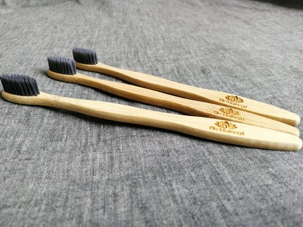

Earth is already dying and people think not getting a plastic straw and their Starbucks cup is enough to save it. It’s high time to switch to eco friendly lifestyle to make this world a better place for us as well as our future generations. Eco-friendly products are best because they reduce the carbon footprint and they are biodegradable.

Plastic tooth brush accounts for the global plastic waste problem and it is non biodegradable and unsustainable.
Every year billions of plastic tooth brushes are thrown away , they finally end up in Oceans or landfills and cause immense pollution.
Advantages of bamboo tooth brush : Shop here-: SustainKart - Bamboo Tooth Brush
1. Eco friendly and organic
2. Sustainable and renewable
Usage of tampons and sanitary pads made up of plastics are extremely harmful and toxic to environment. As they are non biodegradable, they end up in oceans and landfills making water and soil toxic ,which indirectly effects the aquatic life also .
Using one menstrual cup can replace the usage of tampons and pads for 4-5years , reducing the waste byproduct’s .
Shop here-: SustainKart - Menstrual Cup
Annually Indians buy billions of plastic water/beverage bottles contributing to major percentage of non biodegradable waste.
The alternatives are :
1. Insulated stainless steel water bottles
2. Copper water bottles
3. Glass water bottles
4. Aluminium water bottle
Shop here-: SustainKart - Reusable Water Bottles
They are more durable ,safe ,sustainable, biodegradable and eco-friendly. Shop here-: SustainKart - Reusable Cutlery
1. Wooden cutlery
2. Biodegradable coffee cups
3. Bamboo pulp plates
4. Wooden skewers
5. Coconut wood cutlery
Beeswax wraps are the natural alternative to plastic wraps for food storage or packaging. They are eco friendly and exactly replicate cling wraps.
Shop here-: Amazon - Reusable Beeswax Food Wrap
Eco friendly alternatives of plastic straws Shop here-: SustainKart - Reusable Straws
1. Stainless steel straws
2. Bamboo straws
3. Glass straws
These will cut down the amount of plastic which is being used to make tooth paste tubes and they are also easy to ship , which accounts for lesser carbon foot print. Chewable tooth paste tablets have the same tooth paste formula but they are made without water. They are easy to use and sustainable.
Just chew these tablets and brush your teeth with ordinary tooth brush and you are good to go.
Shop here-: SustainKart - Chewable toothpaste pills
1. Cotton/cloth bags Shop here-: SustainKart - Eco-Friendly bags
2. Jute bags
3. Paper bags
4. Bamboo bags
5. Hemp bags